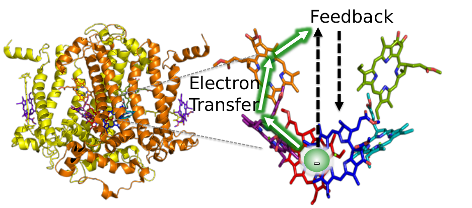

Dr Thibaut Lacroix
Postdoctoral researcher
Institut für Theoretische Physik
Universität Ulm
0000-0002-5190-040X
Researchgate
tfmlaX
Linkedin
@ThibautLacroix
Research
Ignorance is the ground of thought.
📰 Recent Papers
- Du quantique au classique : Un modèle simple de décohérence, Bulletin de l'Union des Physiciens, vol. 117, no. 1057, Oct. 2023.
- From Non-Markovian Dissipation to Spatiotemporal Control of Quantum Nanodevices, Arxiv (2022)
- Unveiling non-Markovian spacetime signaling in open quantum systems with long-range tensor network dynamics, Physical Review A, Issue 5, Vol. 4, Nov. 2021
👨🏻💻 Software Development
I am one of the main contributors of the open-source Julia package MPSDynamics. This package is an implementation of the numerically exact T-TEDOPA method for the study of non-Markovian open quantum systems.
💬 Talks
- Seminar at the Atominstitut, TU Wien, 22/11/2022.
- Bioinspiration for energy transport at the quantum scale, 2-4/11/2022, Invited Speaker
- 9th UK-FR PhD Conference, 24-25/10/2022
- Best poster prize
- Polaron Day 2022, 01/09/2022
- Quantum Effects in Biological System (QuEBS) 2022, 06/06/2022
- APS March Meeting 2022, 17/03/2022
- Quantum Material CDT Science Conference, 21/01/2022
- Sorbonne Quantum Information Day - SQUID, 14/01/2022, Invited Speaker
- Light-matter Interactions from scratch: Theory and Experiments at the Border with Biology, 22/11/2021
- 8th UK-FR PhD Scheme Conference, 10/2021
- Quantum Information Center Sorbonne (QICS) Small Seminar #2, 09/2021
- SUPA 2021 Virtual Gathering
- Poster
- References: TDVP-MPS, T-TEDOPA, Lacroix et al.
- A Data-Driven Approach to Startups Ecosystems, R&D Management, 2018
📓 Notes
I'm moving toward an open notebook.
Contact
📫 Universität Ulm, Institut für Theoretische Physik, Albert Einstein Allee 11, 89081, Ulm, Germany📧 thibaut.lacroix @ uni-ulm.de
Office: Room 4113 - Building M26
Phone: (+49)